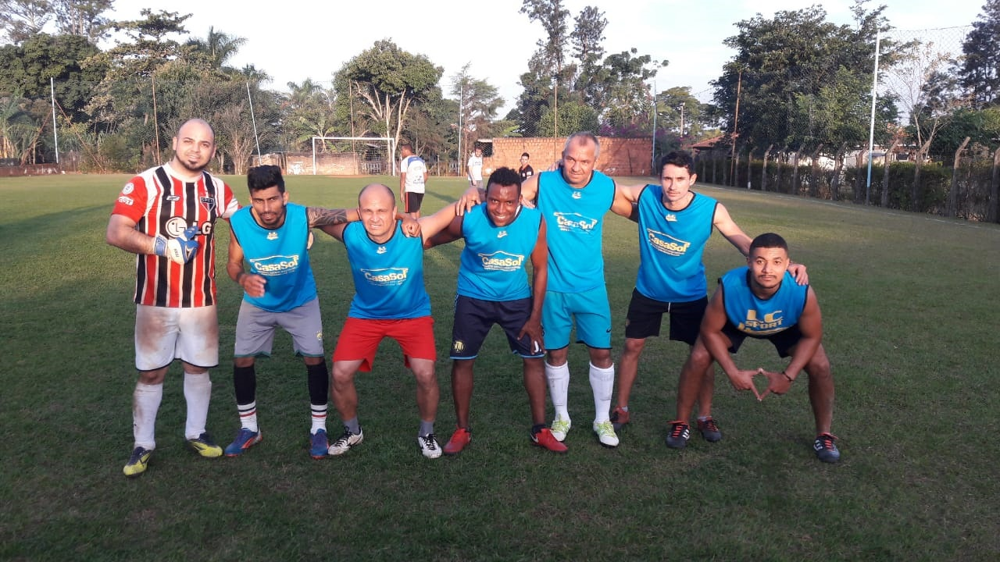

CAMPEONATOS EM CHACARAS
Siga os campeonatos realizados em chacaras que fazem parte do sistema WMF Futebol Arte e acompanhe os resultades, partidas e destaques das rodas, classificação e eliminações.
Read More..
CAMPEONATOS EM CLUBES
Siga os campeonatos realizados em clubes particulares que fazem parte do sistema WMF Futebol Arte e acompanhe os resultades, partidas e destaques das rodas, classificação e eliminações.
Read More..
CAMPEONATOS MUNICIPAIS AMADORES
Siga os campeonatos municipais amadores que fazem parte do sistema WMF Futebol Arte e acompanhe os resultades, partidas e destaques das rodas, classificação e eliminações.
Read More..